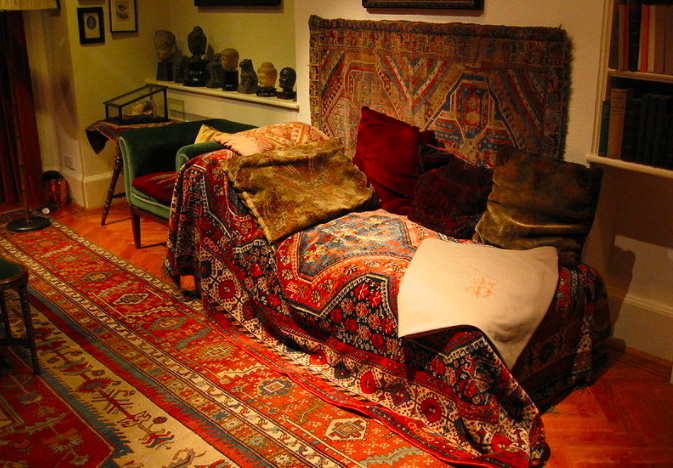

chapter1.3--handout
Background Information
Divan(沙发（床）)
Nick第一眼看到Jordan Baker的时候，她正全身舒展地躺在沙发的一端，（She was extended full length at her end of the divan...）这里提到沙发用的词是divan. 其实典型的divan和我们平时看到的sofa不一样，sofa有靠背和扶手，但divan没有，一般是长形，挨着墙，然后在地上或者是高出地面的平台上放一张床垫（a long seat formed of a mattress laid against the side of the room, upon the floor or upon a raised structure or frame, with cushions to lean against）.
divan原来在波斯语中是指狭长的拱顶屋里必备的一种家具摆设，像这样的↓
19世纪这个词进入英语国家，于是指代范围变广，不仅包括沙发床，还包括有扶手靠背的。divan强调舒适性，因此在19世纪上半叶非常风靡。大家闺秀的房间都会配备这样的沙发，咖啡厅里也都会安置。而且因为很多人喜欢躺在沙发上抽雪茄，所以divan也会叫作cigar divan.
提到divan, 在历史上最有名的当属弗洛伊德的那张心理治疗床（Sigmund Freud's psychoanalytic couch）. 这里的couch其实就是一种divan, 上面盖着波斯毯还放着天鹅绒的枕头（a plain, beige, divan-style sofa that he covered with Persian carpets and velvet pillows）. 它是弗洛伊德的一位女病人为了自己在接受治疗的时候能够更舒服点所以送给他的。

这个沙发床也帮了弗罗伊德大忙，因为精神分析治疗中很重要的一点就是病人必须要完全放松，并且向治疗师敞开心扉（to guard down and start to share their most intimate thoughts and feelings）. 而沙发床的好处就是，病人躺下后直面天花板，治疗师坐在稍远处的凳子上，这样病人更容易专注于自己的想法而不致于被治疗师干扰。
随着看的病人越来越多，这张沙发床也就成为治疗标配了，它现在还在英国伦敦的弗洛伊德博物馆里（Freud Museum）.
因此psychiatrist's couch也被等同于“精神治疗”. 而on the couch 则可以用来指“接受精神分析治疗”。
比如在去年，美国一个著名的精神分析学家Dr. Justin Frank写了一本畅销书就叫Trump on the couch: Inside the Mind of the President.（《沙发上的特朗普：一个总统的内心世界》）。
在这本书里，作者对Trump的童年经历、家庭关系以及生意往来都进行了分析，从而探究他的心理人格到底是如何形成的。所以不难理解书名里的on the couch其实就是指作者put Trump on the couch, “对Trump进行心理分析”（可不能理解成把Trump撂倒在沙发上哦）。
Vocabulary
anchor
💧n. 锚；锚状物 vt. 抛锚泊船；使固定（to fasten something firmly so that it cannot move）
💧原文：The only completely stationary object in the room was an enormous couch on which two young women were buoyed up as though upon an anchored balloon.
屋子里唯一完全静止的东西是一张庞大的长沙发椅，上面有两个年轻的女人，活像浮在一个停泊在地面的大气球上。
💧anchor作名词指“锚”，用以停泊船只，那么作动词的引申义就是“使稳定，固定”。这里的an anchored balloon是将an enormous couch比作“被固定在地面上的气球”。
💧anchor还可以用于表示抽象意义，be anchored in 就可以指“扎根于（某种体系、生活方式）”，相当于be rooted in. 比如：
Her novels are anchored in everyday experience.
她的小说取材自日常生活经验。
balloon
💧n.气球；热气球
vt.膨胀；乘热气球飞行；激增（to suddenly become larger in amount）
💧原文：...and the curtains and the rugs and the two young women ballooned slowly to the floor.
窗帘、地毯和两位少妇也都慢慢地降落地面。
💧这里balloon作动词，表示“乘坐气球”，ballooned slowly to the floor即“（仿佛）乘坐着气球缓缓地降落”。
💧由于balloon还可以表示“膨胀，鼓起”的意思，比如风把裙摆吹起来可以说：
Her skirt ballooned out in the wind.
她的裙子让风吹得鼓起来了。
💧也可以用于抽象意义上的“（数量）激增”，比如：
In London, the use of the Tube has ballooned...
在伦敦，坐地铁的人激增。
Crush Your Problems
- A breeze blew through the room, / blew curtains / in at one end and out the other / like pale flags, / twisting them up / toward the frosted wedding-cake of the ceiling, / and then rippled over the wine-colored rug, / making a shadow on it / as wind does on the sea.
一阵轻风吹过屋里，把窗帘从一头吹进来，又从另一头吹出去，好像一面面白旗，吹向天花板上糖花结婚蛋糕似的装饰；然后轻轻拂过绛色地毯，留下一阵阴影有如风吹海面。
💧句式拆解
①这句话的主体部分是A breeze blew through...blew curtains...and then rippled over...
②还要注意的是有两个非谓语结构作伴随状语（twisting them up...以及making a shadow...）
💧表达精讲
①in at one end and out the other, in和out是一组反义词哦~end表示“端，头”，所以这里的意思就是“把（窗帘的）一头吹进来又把另一头吹出去”。
②the frosted wedding-cake of the ceiling 并不是指天花板上的糖花婚礼蛋糕（蛋糕不可能在天花板上），这里其实暗藏了一个比喻（metaphor），也就是把天花板上的装饰图案比之于糖花婚礼蛋糕。这种糖花蛋糕似的装饰需要很高的技巧完成，相当于要在天花板上用涂墙泥（plaster）做拉花，价格也相对昂贵。
③wine-colored rug “酒红色的地毯”，在这里象征着阶级和奢华（class, extravagance）；wine在这里还有一层含义，因为在20年代的时候，美国举国上下实行禁酒令（Prohibition），跟酒产生关系的东西和行为都会被认为是不正当的（illicit），所以这里可以理解为暗指会有illicit behavior的发生（无论是Tom的出轨行为，或是Gatsby对Daisy的追求等等）。
- “I’m p-paralyzed with happiness.” She laughed again...
“我高兴得瘫……瘫掉了。”她又笑了一次……
💧表达精讲
be paralyzed with happiness 在这里并不是真的表示高兴地“瘫痪掉了”，而是一种比喻的说法，比如：
She stood there, paralyzed with fear.
她站在那里，吓得呆若木鸡。
这个词还可以用来表示行政体系、公共设施“瘫痪，不能正常运转”，比如：
The airport is still paralyzed by the strike.
飞机场仍因罢工而陷于瘫痪。 - Again / a sort of apology arose to my lips. Almost any exhibition of complete self-sufficiency / draws a stunned tribute from me.
道歉的话又一次冒到了我的嘴边。几乎任何完全我行我素的神情都会使我感到目瞪口呆，满心赞佩。
💧表达精讲
①self-sufficiency 原义是“自给自足，自力更生”，这里引申为我行我素的”。
②any exhibition of 任何…（感情，情绪）的展现。
③stunned 表示“惊愕的”，即extremely shocked; tribute 表示“致敬，献礼”，比较正式，常见搭配是pay tribute to. 比如：
At her funeral, her oldest friend paid tribute to her life and work.
在葬礼上，她最早的朋友对她的一生和工作给予了高度的赞扬。
这里Nick有点说反话的感觉，complete self-sufficiency 指的其实是complete arrogance/conceit，而他“致敬”的则是Miss Baker竟然如此以自我为中心（acknowledging the egotism of her）. - “You are!” He took down his drink / as if it were a drop in the bottom of a glass. “How you ever get anything done / is beyond me.
"你在训练！"他把酒一饮而尽，仿佛那是杯底的一滴。"我真不明白你怎么可能做得成什么事情。"
💧表达精讲
①take down 在这里指“一饮而尽”。
②as if it were a drop in the bottom of a galss 是虚拟语气（所以谓语是were而不是was哦~使用虚拟语气的时候was都要换成were），“仿佛（一杯酒）只是杯底的一滴”，这里夸张地展现了Tom一口把酒喝下的动作。
③sth be beyond sb 表示“某人无法想象/搞不懂某事”，比如：It's beyond me why she wants to marry Jeff. 我无法理解她为什么要嫁给杰夫。
这里的意思是Tom无法想象Miss Baker竟然能做成什么事（get anything done）, 语气里带着明显的轻蔑。
Content Analysis
💧Clue 1: Tom is dictatorial (专横的) in essence.
Tom在Nick的笔下也是一个有点矛盾的形象，比如他会穿着象征高等贵族的骑装（the effeminate swank of his riding clothes）, 而且这种衣服还会显得特别女气（effeminate表示“女人气的”）。
但同时他又非常魁梧，而且还有着和贵族相反的一种野蛮的气质，比如Nick把他形容为a cruel body.（Chapter 1.2的结尾段）不仅是外形，他的声音也充满了生硬粗野的感觉（gruff and husky），即便对喜欢的人也是如此。
所以Nick暗示的，是Tom虽然出身高贵，但丝毫没有儒雅之气；相反，他的内在是一种近乎残忍野蛮的“专横”。我们看一下有哪些具体表现：
Evidence 1:...I always had the impression that he approved of me and wanted me to like him with some harsh, defiant wistfulness of his own.
我总觉得他很看重我，而且带着他那特有的粗野、蛮横的怅惘神气，希望我也喜欢他。
这里讲到Nick总感觉Tom希望Nick能喜欢他，而且他的这种渴望是带着粗野和挑衅意味的（harsh and defiant）. wistfulness在这里可以理解为一种强烈的渴望，甚至因为求而不得而怅惘（the state of desiring something intensely, usually something they know they can't have）.
可以结合前面提到的Tom在大学时期就因为橄榄球而成为全民知晓的人物，习惯万人追捧的他也就不免对身边任何人都有一种逼迫感，希望他们可以喜欢他（或许也是他隐隐察觉出了Nick其实并不认可他，才更加因此而显出一种强势但又带着怅惘）。
更直接一点，我们可以从Tom的肢体语言看出他的专横和强势——
Evidence 2:Turning me around by one arm, he moved a broad flat hand along the front vista...He turned me around again, politely and abruptly. “We’ll go inside.”
他抓住我的一只胳臂把我转过身来，伸出一只巨大的手掌指点眼前的景色……他又把我推转过身来，客客气气但是不容分说，"我们到里面去吧。"
这里Tom向Nick展现自己的豪宅时，全程表现出的就是主动强势的一方，如果说是把Nick当客人，似乎又少了平常该有的礼让，比如询问对方是否要看看另一边，或是否要进屋里坐坐。他直接用肢体动作代替了语言，不给对方接受或拒绝的机会（to ask only for obedience）.
💧Clue 2: The description of the setting in the house foretells the story.
Fitzegerald的故事叙述手法很特别，比如情节的推动和前后的呼应主要都靠隐喻（Metaphor）以及象征（Symbolism）来实现。在今天的内容中，作者就花了很多笔墨在描写房子里大厅的布景和环境，某些看似隐晦的细节其实都在指向后面的故事发展。
Evidence 1:A breeze...and then rippled over the wine-colored rug, making a shadow on it as wind does on the sea.
一阵轻风……然后轻轻拂过绛色地毯，留下一阵阴影有如风吹海面。
“风拂过地毯留下一道阴影，就像拂过海面的时候一样”，乍看之下这句话似乎非常优美，但仔细想想，风怎么会留下影子呢？
但如果我们把它看作是一个隐喻，就可以作出合理的猜测：正是因为风是无法投下影子的，作者想暗示的其实是这个故事里发生的很多东西都是虚幻的，甚至是无意义的，最后都会go with the wind.
Evidence 2: They were both in white, and their dresses... 她们俩都身穿白衣，衣裙……
这是对Daisy和Miss Baker着装的描写，她俩穿的都是白色的裙子，这是除酒红色（the wine-colored rug）外作者提及的第二种颜色。用颜色来表达特定的含义是象征手法的一种——wine-colored对应的是illegal, 而这里white对应的含义有两种解释：
一种是指purity（纯洁，纯真）；另一种是指 a void of something such as intellectualism（无知的，没有思考能力的）。这个铺垫对于理解后面两个人物的言行举止都非常重要，大家也可以留意之后的情节哪里又出现了白色哦~
Today's Bonus
💧Assertive, Not Aggressive 坚定自信并不意味着咄咄逼人
今天的重点人物Tom就是一个因为过于强势而导致社交失败的典型例子（Nick对他的各种肢体动作及语言显然非常不适）。Tom想博得Nick的好感和认同，结果过于eager以及aggresive而适得其反（虽然在这里老师很想表示：I have no sympathy with him, though.）
强势会给身边的人带来压力和受伤感，但事实情况是大部分人只是错误地表现了自己，比如可能只是想坚定自己的立场，但使用了不当的话语模式而传递出不友好的信息。
所以今天的彩蛋老师会给大家讲讲如何Be assertive, not aggressive.
💧首先我们看看什么是to assert↓
TO ASSERT — To state an opinion, claim a right, or establish authority. If you assert yourself, you behave in a way that expresses your confidence, importance or power and earns you respect from others.
— Oxford English Dictionary
简单来说，自信果敢表现在敢于表达自己的看法、伸张自己的权利并且建立权威的同时，又能赢得身边人的尊重。而assertive people和aggressive people的区别就在于：前者是建立在完全尊重他人的基础上，而后者常常会为了维护自己的立场而攻击或是忽视来自他人的意见。
💧两者对比：
Aggressive Behavior: Controls groups
Assertive Behavior: Participates in groups
Aggressive Behavior: Interrupts and 'talks over' others
Assertive Behavior: Speaks openly
Aggressive Behavior: Stands rigidly, crosses arms, invades others' personal space
Assertive Behavior: Relaxes and adopts an open posture and expressions
其实Assertive Behavior总结起来就是一个原则：I'm okay, you're okay. 认可自己，也认可他人。下面就给大家提供一些具体的tips~
- Give others a chance to speak.
尊重别人发表意见的权利和时间，其实也就是表示对于别人的认可。所以在别人正说话的时候，即便自己产生了一个很好的想法，不也要着急打断，耐心听别人说完。
- Be diplomatic.
但assertiveness也并不代表我们需要对别人的所有看法都表示赞成，比起虚伪的认同，更重要的是如何礼貌婉转地表达我们的观点，几个原则：
婉转否定：用"I disagree"会比"You're wrong"好得多（避免直接否定对方）；
巧用美言：先赞美对方，比如"Mary has had some great ideas, but I just don't think this one will work"而不是粗暴无礼地说"That's stupid".
同理共情：尽可能谦虚，可以这样说 "You know, I really don't want to hurt your feelings, but I think you should know ... "
- Choose assertive (not aggressive) language.
我们还会经常遇到的一个难题是，别人有一些不良习惯或是犯了错误，这时候我们就需要一套既可以有效解决问题又不会让对方产生抵触心理的话语模式，以下：
提醒对方不要迟到：
"You're never on time" ×
"You were late for the third time this week" √
指出对方犯的错误：
"You're sloppy and disorganized" ×
"These documents weren't filed in order" √
安排对方去做某事：
"You must/You have to..." ×
"I think it would be better if ... " √
希望对方不要打断：
"You're always interrupting" ×
"I would like a chance to say something" √
- Avoid physically aggressive behavior.
最后是肢体语言上需要注意的地方。有一些动作是一定要避免的，比如“瞪眼”（glaring）, “扯嗓子”（shouting）, “摔门”（slamming doors）.
切记，管理自己的情绪，也要管理它的出口，有一些肢体动作比言语来的伤害更大。（No matter how angry or passionate you are about an issue, it is important to exercise physical control.）
如果你也曾经因为无意的强势而带给别人伤害，尝试一下这些方法吧~你会发现原来坚持自己的看法并不一定要以牺牲他人的好感为代价，很多看似棘手的情况也可以灵活圆滑地处理。
只需要记住一个原则——I'm okay, you're okay.